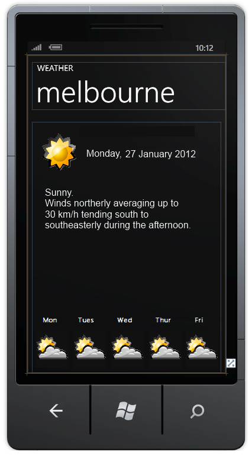

Building a Windows Phone App Part 1
Posted on Monday January 2012
Building a Windows Phone App Part 1
My First Second Windows Phone App
Having acquired a Windows Phone I now want to build some apps. That and there is a competition going at the moment where I can win a newer phone. Much procrastination ensues.
I have spent some time researching; I had a few ideas such as a basic dictation app.
There are a number of issues in building a decent solution, not insurmountable but certainly difficult. For instance although we have a WMA decoder on the phone there is no encoder. There are several third party and open source libraries to bridge this... but they must be in managed code. And run on .NET CF. So, not impossible, just a massive pain in either porting a solution or hunting something down.
And there's the question of whether a phone is the best place to be transcoding audio on the fly...
Or another idea to be able to update the tile of a bookmarked web page on the start screen. By default you get a picture of the webpage you were looking at, which is... crap. Sounds trivial, but your sandboxed and have no access to do this. We hear tell of dodgy pinvoking assemblies around that access the registry and let you run unmanaged code. There is probably a solution somewhere down that path (I'm guessing the bookmarks are either in a system folder somewhere or in the registry - it is Windows running on there after all) but good luck getting that submitted to the market place.
I got some skills in Silverlight, HTML and JS, so native apps or Phone Gap apps are both open to me. And I reckon I can cobble an XNA based app together.
I need a design
Problem number one - what to build?
My advice, to anyone who would listen, would be to:
- Keep it simple,
- Focus on solving a single problem,
- Do that really well,
- and, Keep it simple
For me point 2 translates to
"what annoys me, is a hassle, or a little pain when using the phone"
and/or
"what do I wish I could do but can't on this phone"
I need a problem
I've got a lot of problems. Personal issues aside, I do have few things I want out of this phone:
- a free weather app that tells what is happening near me. Particularly if it is going to rain shortly, as I cycle everywhere
- a free, simple, audio notes app thingy. Just want to record stuff occasionally
- fix the bookmarks on the start screen! Use the favicon at least
- a (free) decent mobile view of a few sites I like to read, Hacker News, Slash Dot. HN has shit markup (I see you like tables) and an anaemic RSS feed
- a (free) decent RSS reader
Some of these are easily solved by having a look through the market place. Some of these are opportunities (as far I can see). And some of these are really only going to appeal to me.
Oh, and I like free.
OK, Now I need a design
I'm going to pick an easy (I hope) one - a weather app. Hey, hey, why not, I've already written a couple for my own personal pleasures. I want total saturation of weather information on all devices!
The problem statement is going to define the scope and hopefully keep us focused on just doing the one thing well:
Show me upto date weather info for Melbourne
And here's a bunch of features, both functional and technical
- use the BOM data for Melbourne
- do not require ME to provide any online service ('cos I 'aint paying for hosting)
- have a Live Tile that shows the little icon for today's weather and current/last temperature
- show today's forecast in detail
- show the rest of the week or next 7 days in a summary
- show it all on one screen
- cache the data to local storage
- be free
- support portrait orientation only
- be as pretty as I can make it. Hmm... maybe - don't be ugly?
Use the BOM data. This is some good data! It's in a pretty crap format, it's XML at least, but in a very generic structure (xml elements are called... element! Yeah that makes sense). Actually, maybe making things as key-value pairs provides flexibility? It's free! It's accurate, the BOM are pretty much the source of the weather data round here.
At least I think it's free, I'm using the data for "ingestion by computers". Delicious. I don't think I'm performing "secondary distribution" - you cannot use this app as a source for some other system. Nor am I caching or proxying the FTP data on my sever, I explicitly do not want to do that.
Maybe I should ask.
Hello, I am writing a windows phone 7 application to show forecast and current observation data on the phone for the Melbourne area.
As per your policy on http://reg.bom.gov.au/catalogue/data-feeds.shtml I believe my use is acceptable - the app will be free - the app will pull direct from the BOM FTP server and cache locally so as not to unnecessarily hit your servers. - it is not performing "secondary distribution" in the sense that the app cannot be used as a source for further consumption - I am happy to add copyright and source information within the app
Is my usage acceptable? Is there anything else you require me to do?
Regards, Ben
This adds a new feature:
- show BOM copyright message on screen
Live Tile. I checked out the Microsoft weather app, its biggest complaint - no live tile! At the very least we can update the tile when we exit the app with the last cached observations.
The live tile will show the icon for today's weather and the most recent temperature observation. Observations are available in JSON, probably also as XML somewhere too.
Show today’s forecast in detail, show a summary for the rest of the week, fit on one screen. I'm keeping it simple, simple in terms of I just want to glance and see enough info for today, less info for tomorrow. It's like a KPI dashboard report. I'm going to limit the number of future days to only show the next five, so as to have a consistent display and I'm pretty sure there will always be five days forecast available.
We need a wireframe/mockup! Paint is my favourite tool for this, as I am graphically retarded.

OK, so looking at that:
- hey it looks pretty good!
- I forgot the temperature (min and max)
- I should define the properties I am going to use (precis?)
- I know today is today, so I don't need the date. Besides, that date just... isn't... possible...
- I need to add the copyright message
- I should show the forecast temperature on the future day’s icon as well
- I forgot the current temperature reading

The Live tile will look like the future tile.
I think that covers the enough detail. Lets get cracking!
2012
- App Upgrade Manager
- Classing Invalid Elements With WebForms Validation
- WebForms ModelBinder
- Bookmark to RSS
- Budget ModelBinder for ASP.NET WebForms
- Optimising C#
- Falling Stars
- the simplest thing - event aggregation
- You Never Get Anything Done
- Clustering Results with Windows Phone Bing Map Control
- CSV the file format that would not die
- Building a Windows Phone App Part FUUUU
- Building a Windows Phone App Part 3
- Building a Windows Phone App Part 2
- Building a Windows Phone App Part 1
- Target Windows Phone CSS
2011
- JavaScript select
- jQuery Plugin Template
- Mandelbrot with Workers
- Drawing the Mandelbrot Set on HTML5 canvas
- Metro GOOD, url rewriting BAD
- Simple Logging Helpers
- WPF Find Textbox
- Zero Width Space
- Structuring Data
- Getting Started with MSMQ
- JavaScript Module Visual Studio Template
- Visualizing Dependancies
- Fluent File Renaming API
- Proxy Google Weather as JSON (Part 2)
- Proxy Google Weather as JSON (Part 1)
- What does Google suggest?
- Basic Screen saver in WPF
- Un-Personalizing your google search results (in FireFox)